Laboratório 4 - Codificação de Imagem com DWT
Codicação de Luminância (P&B) com DWT
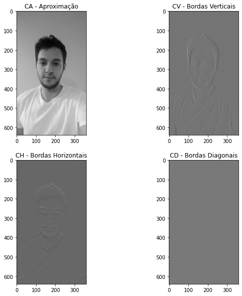 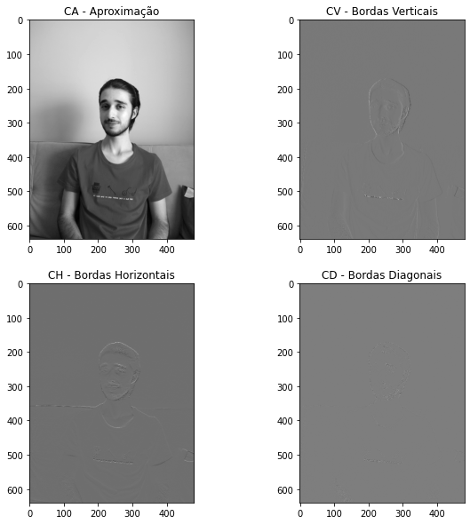 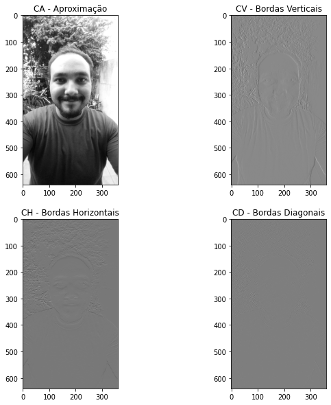 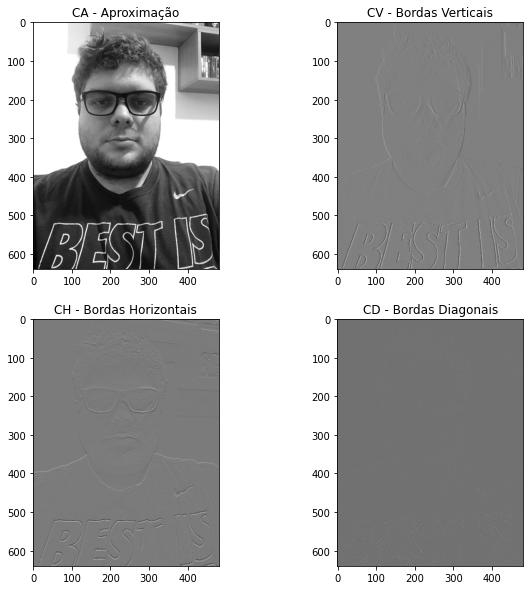 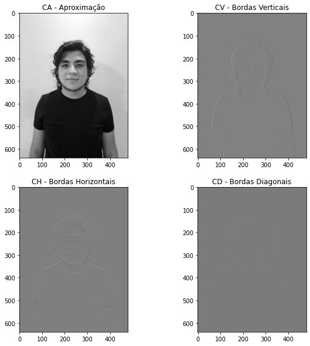Cálculo do Erro Quadrático Médio (MSE) e da Relação Sinal Ruído de Pico (PSNR)
MSE = 2.10e-24 PSNR = 284.90 dB MSE = 1.39e-24 PSNR = 286.71 dB
MSE = 1.39e-24 PSNR = 286.71 dB

Teste das Funções de Multiresolução wavedec2() e waverec2()
Plot dos coeficientes do nível 2 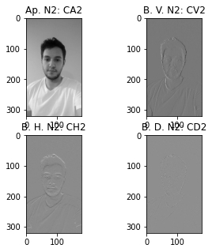 Plot Original e Reconstrução 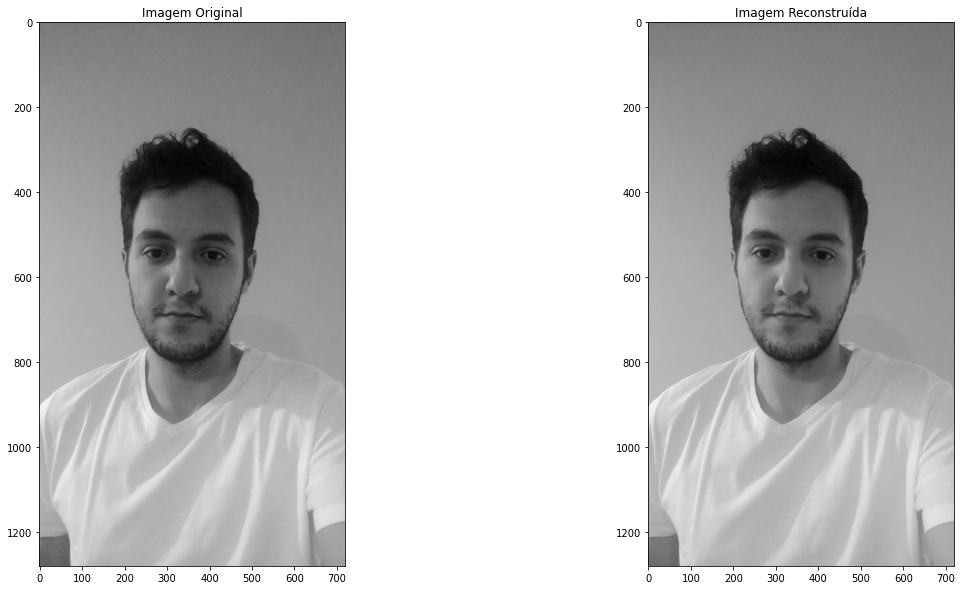 Codificação de Imagem em multinível com função wavedec2() 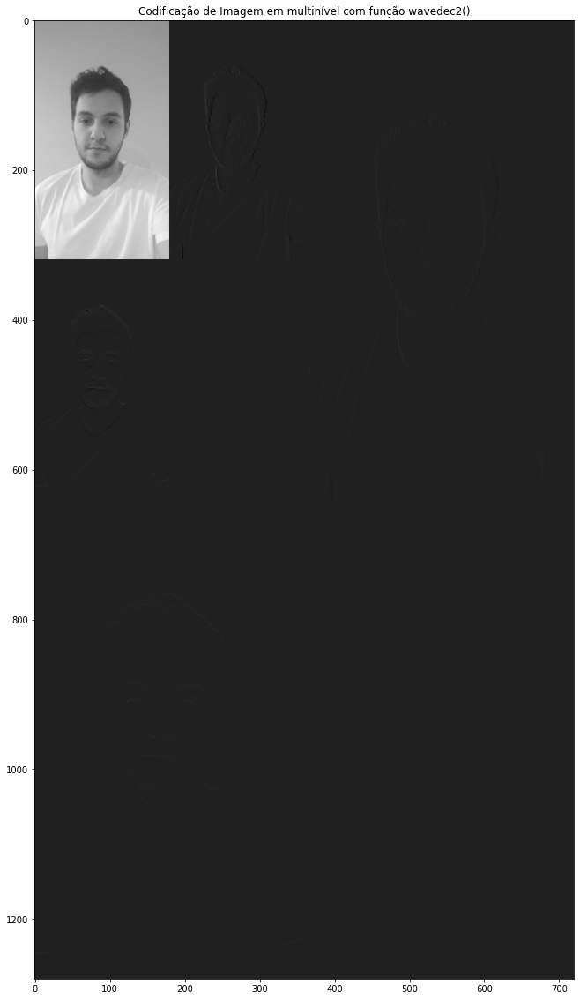Reconstrução de Imagem Colorida
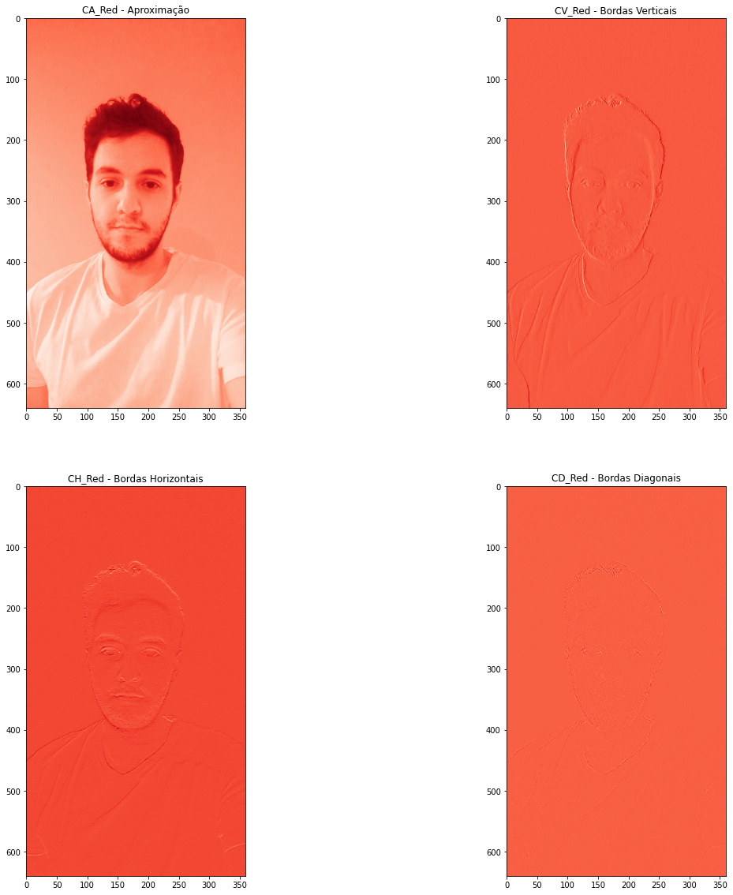 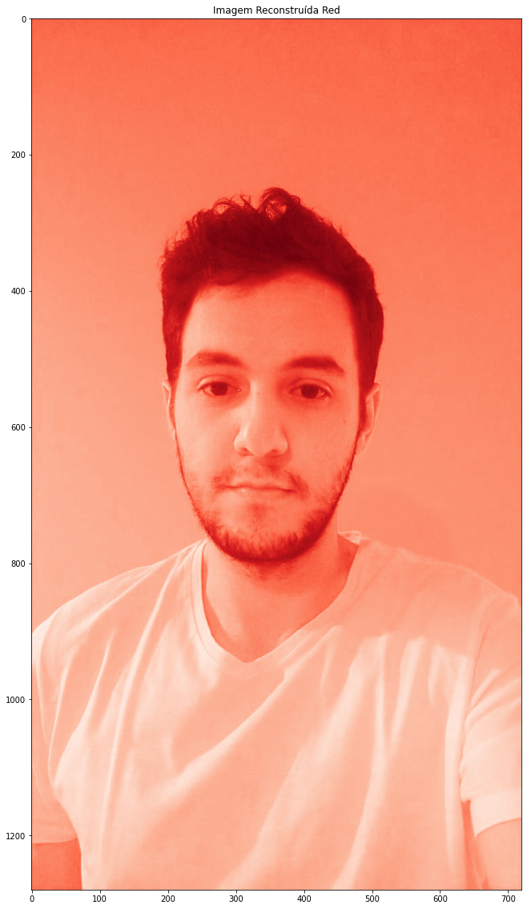 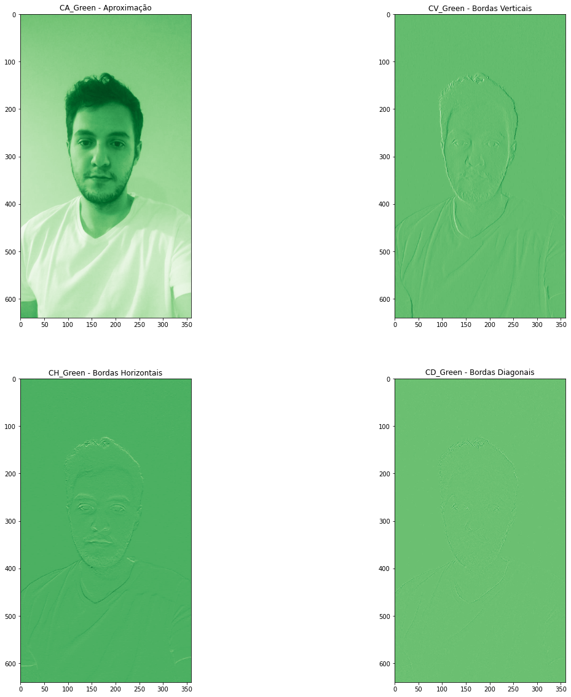 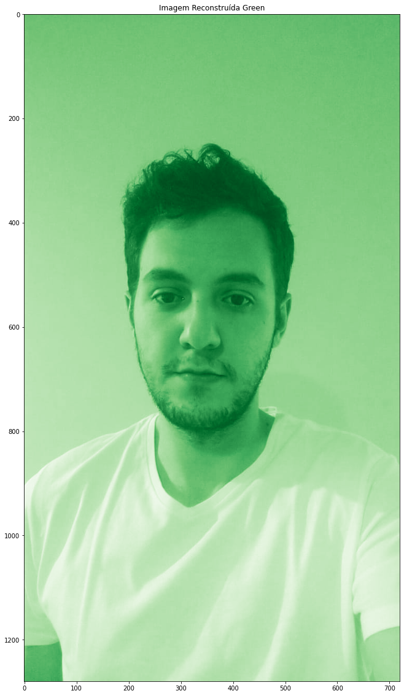 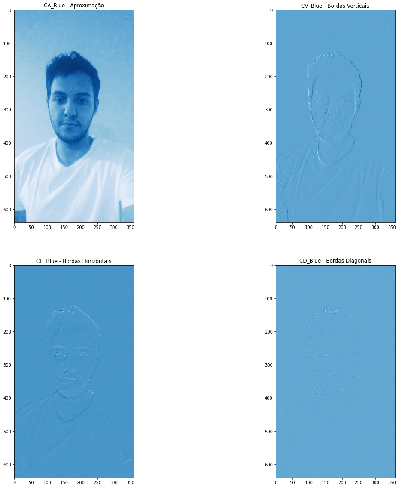 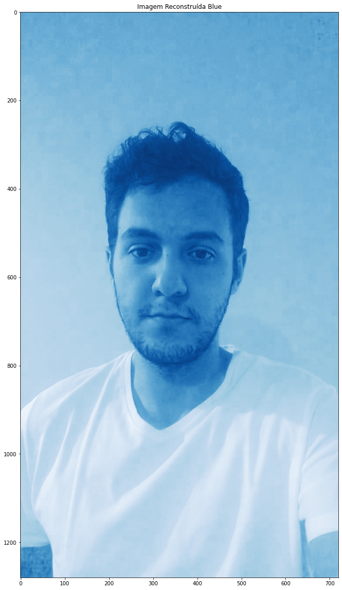Aproximações e taxa de compressão
Aproximação Nível 1 só Y Aproximação Nível 2 só Y Aproximação Nível 1 ColoridaFoto do Grupo
Acrescentar também a foto-montagem do grupo todo, mas codificar esta foto-montagem em um nível com DWT também as componentes Cr e Cb (efetuamos aqui apenas para a componente Y)
Componente Y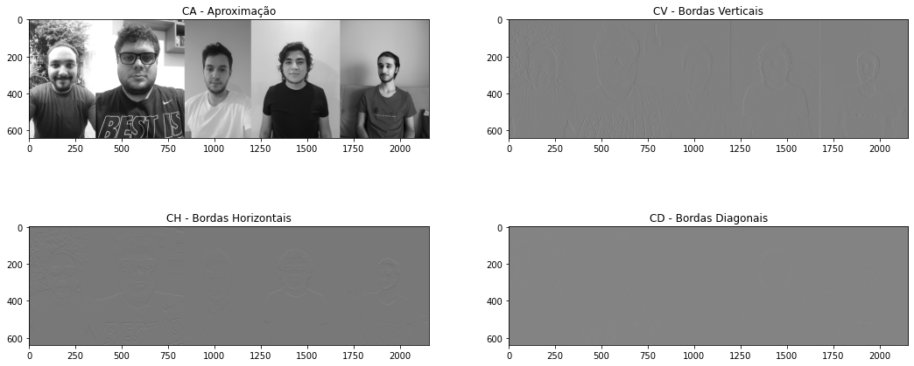 Componente Cb
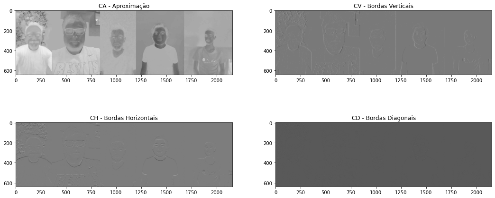
Componente Cr
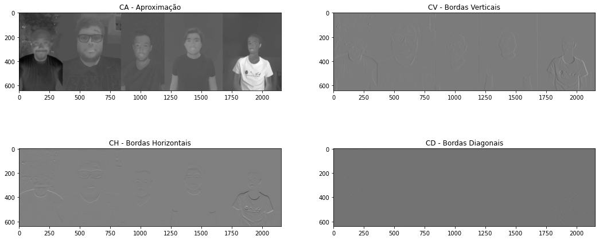
Cálculo da PSNR
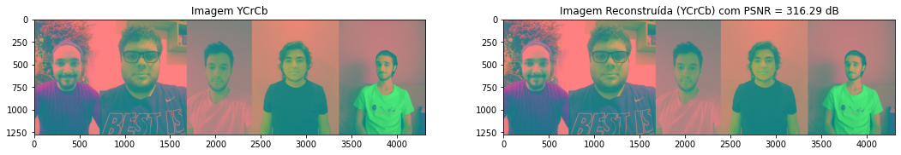
Links para o Jupyter Notebook
OriginalHtml
Tabela de Taxas de Compressão e PSNRs
| Imagem | PSNR | Original | DWT_N1_Y | Compressão | DWT_N1_colorida | Compressão | DWT_N2_Y | Compressão |
|---|---|---|---|---|---|---|---|---|
| Bruno | 30 dB | 138 KB | 301 KB | 46% | 900 KB | 15% | 76.1 KB | 181% |
| Gabriel | 30 dB | 111 KB | 226 KB | 49% | 675 KB | 16% | 57.3 KB | 194% |
| Jonas | 28 dB | 42.8 KB | 226 KB | 19% | 675 KB | 6% | 57.3 KB | 75% |
| Lucas | 30 dB | 139 KB | 304 KB | 46% | 903 KB | 15% | 77.3 KB | 180% |
| Matheus | 30 dB | 49.6 KB | 301 KB | 16% | 900 KB | 5% | 76.1 KB | 65% |
| Grupo | 316.29 dB |
Audio Descrição
Descrição da Parte 1Descrição da Parte 2